В данном уроке рассматривается сложение и вычитание рациональных чисел. Тема относится к категории сложных. Здесь необходимо использовать весь арсенал полученных ранее знаний.
Правила сложения и вычитания целых чисел справедливы и для рациональных чисел. Напомним, что рациональными называют числа, которые могут быть представлены в виде дроби  , где a – это числитель дроби, b – знаменатель дроби. При этом, b не должно быть нулём.
, где a – это числитель дроби, b – знаменатель дроби. При этом, b не должно быть нулём.
В данном уроке дроби и смешанные числа мы всё чаще будем называть одним общим словосочетанием — рациональные числа.
Навигация по уроку:- Сложение рациональных чисел с разными знаками
- Сложение отрицательных рациональных чисел
- Несколько дробей
- Десятичные дроби
- Задания для самостоятельного решения
Пример 1. Найти значение выражения:
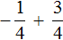
Заключим каждое рациональное число в скобки вместе со своими знаками. Учитываем, что плюс который дан в выражении, является знаком операции и не относится к дроби \(\frac{3}{4}\). У этой дроби свой знак плюса, который невидим по причине того, что его не записывают. Но мы запишем его для наглядности:
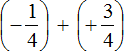
Это сложение рациональных чисел с разными знаками. Чтобы сложить рациональные числа с разными знаками, нужно из большего модуля вычесть меньший модуль, и перед полученным ответом поставить знак того рационального числа, модуль которого больше. А чтобы понять какой модуль больше, а какой меньше, нужно суметь сравнить модули этих дробей до их вычисления:
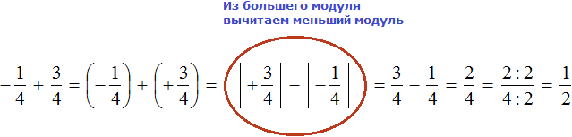
Модуль рационального числа \(\frac{3}{4}\) больше, чем модуль рационального числа \(-\frac{1}{4}\). Поэтому мы из \(\frac{3}{4}\) вычли \(\frac{1}{4}\). Получили ответ \(\frac{2}{4}\). Затем сократив эту дробь на 2, получили окончательный ответ \(\frac{1}{2}\).
Некоторые примитивные действия, такие как заключение чисел в скобки и проставление модулей, можно пропустить. Данный пример вполне можно записать покороче:
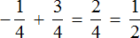
Пример 2. Найти значение выражения:
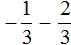
Заключим каждое рациональное число в скобки вместе со своими знаками. Учитываем, что минус, стоящий между рациональными числами
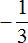
и \(\frac{2}{3}\) является знаком операции и не относится к дроби \(\frac{2}{3}\). У этой дроби свой знак плюса, который невидим по причине того, что его не записывают. Но мы запишем его для наглядности: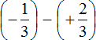
Заменим вычитание сложением. Напомним, что для этого нужно к уменьшаемому прибавить число, противоположное вычитаемому:
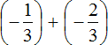
Получили сложение отрицательных рациональных чисел. Чтобы сложить отрицательные рациональные числа, нужно сложить их модули и перед полученным ответом поставить минус:
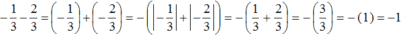
Запишем решение данного примера покороче:
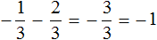
Примечание. Заключать в скобки каждое рациональное число вовсе необязательно. Делается это для удобства, чтобы хорошо видеть какие знаки имеют рациональные числа.
Пример 3. Найти значение выражения:
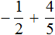
В этом выражении у дробей разные знаменатели. Чтобы облегчить себе задачу, приведём эти дроби к общему знаменателю. Не будем подробно останавливаться на том как это сделать. Если испытываете с этим затруднения, обязательно повторите урок действия с дробями.
После приведения дробей к общему знаменателю выражение примет следующий вид:
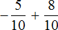
Заключим каждое рациональное число в скобки вместе своими знаками:
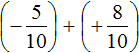
Это сложение рациональных чисел с разными знаками. Вычитаем из большего модуля меньший модуль, и перед полученным ответом ставим знак того рационального числа, модуль которого больше:
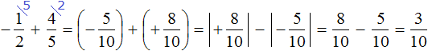
Запишем решение данного примера покороче:
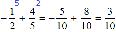
Пример 4. Найти значение выражения
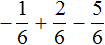
Заключим каждое рациональное число в скобки вместе со своими знаками:
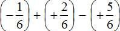
Вычислим данное выражение в следующем порядке: слóжим рациональные числа \(-\frac{1}{6}\) и
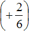
, затем из полученного результата вычтем рациональное число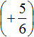
.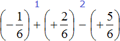
Первое действие:
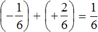
Второе действие:
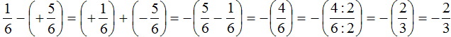
Таким образом, значение выражения равно \(-\frac{2}{3}\)
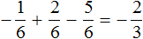
Пример 5. Найти значение выражения:
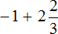
Представим целое число −1 в виде дроби
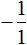
, а смешанное число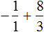
Приведём данные дроби к общему знаменателю. После их приведения к общему знаменателю, они примут следующий вид:
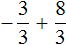
Заключим каждое рациональное число в скобки вместе со своими знаками:
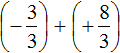
Получили сложение рациональных чисел с разными знаками. Вычитаем из большего модуля меньший модуль, и перед полученным ответом ставим знак того рационального числа, модуль которого больше:
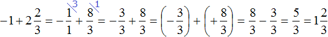
Получили ответ  .
.
Есть и второй способ решения. Он заключается в том, чтобы сложить отдельно целые части.
Итак, вернёмся к изначальному выражению:
Заключим каждое число в скобки. Для этого смешанное число  временно развернём:
временно развернём:
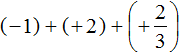
Вычислим целые части:
\[(-1) + (+2) = 1\]
В главном выражении вместо (−1) + (+2) запишем полученную единицу:
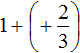
Полученное выражение свернём. Для этого запишем единицу и дробь \(\frac{2}{3}\) вместе:
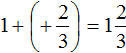
Запишем решение этим способом покороче:
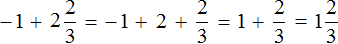
Пример 6. Найти значение выражения
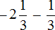
Переведём смешанное число  в неправильную дробь. Остальную часть перепишем без изменения:
в неправильную дробь. Остальную часть перепишем без изменения:
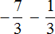
Заключим каждое рациональное число в скобки вместе со своими знаками:
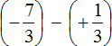
Заменим вычитание сложением:
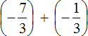
Получили сложение отрицательных рациональных чисел. Слóжим модули этих чисел и перед полученным ответом поставим минус:
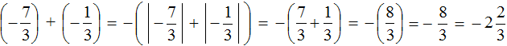
Запишем решение данного примера покороче:
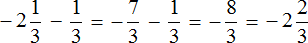
Пример 7. Найти значение выражение
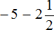
Представим целое число −5 в виде дроби
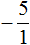
, а смешанное число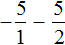
Приведём данные дроби к общему знаменателю. После их приведения к общему знаменателю, они примут следующий вид:
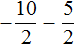
Заключим каждое рациональное число в скобки вместе со своими знаками:
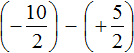
Заменим вычитание сложением:
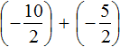
Получили сложение отрицательных рациональных чисел. Слóжим модули этих чисел и перед полученным ответом поставим минус:
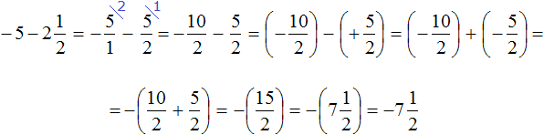
Таким образом, значение выражения равно  .
.
Решим данный пример вторым способом. Вернемся к изначальному выражению:
Запишем смешанное число  в развёрнутом виде. Остальное перепишем без изменений:
в развёрнутом виде. Остальное перепишем без изменений:
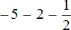
Заключим каждое рациональное число в скобки вместе своими знаками:
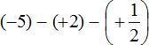
Заменим вычитание сложением там, где это можно:
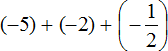
Вычислим целые части:
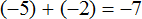
В главном выражении вместо запишем полученное число −7
Выражение является развёрнутой формой записи смешанного числа  . Запишем число −7 и дробь \(-\frac{1}{2}\) вместе, образуя окончательный ответ:
. Запишем число −7 и дробь \(-\frac{1}{2}\) вместе, образуя окончательный ответ:
Запишем это решение покороче:
Пример 8. Найти значение выражения
Переведём смешанные числа в неправильные дроби:
Заключим каждое рациональное число в скобки вместе своими знаками:
Заменим вычитание сложением:
Получили сложение отрицательных рациональных чисел. Слóжим модули этих чисел и перед полученным ответом поставим минус:
Таким образом, значение выражения равно 
Данный пример можно решить и вторым способом. Он заключается в том, чтобы сложить целые и дробные части по отдельности. Вернёмся к изначальному выражению:
Заключим каждое рациональное число в скобки вместе со своими знаками:
Заменим вычитание сложением:
Получили сложение отрицательных рациональных чисел. Слóжим модули этих чисел и перед полученным ответом поставим минус. Но в этот раз слóжим по отдельности целые части (−1 и −2), и дробные и
Запишем это решение покороче:
Пример 9. Найти значение выражения
Переведём смешанные числа в неправильные дроби:
Заключим рациональное число \(-\frac{5}{2}\) в скобки вместе своим знаком. Рациональное число в скобки заключать не нужно, поскольку оно уже в скобках:
Приведём данные дроби в общему знаменателю. После их приведения к общему знаменателю, они примут следующий вид:
Получили сложение отрицательных рациональных чисел. Слóжим модули этих чисел и перед полученным ответом поставим минус:
Таким образом, значение выражения равно
Теперь попробуем решить этот же пример вторым способом, а именно сложением целых и дробных частей по отдельности.
В этот раз, в целях получения короткого решения, попробуем пропустить некоторые действия, такие как: запись смешанного числа в развёрнутом виде и замена вычитания сложением:
Обратите внимание, что дробные части были приведены к общему знаменателю.
Пример 10. Найти значение выражения
Заменим вычитание сложением:
В получившемся выражении нет отрицательных чисел, которые являются основной причиной допущения ошибок. А поскольку нет отрицательных чисел, мы можем убрать плюс перед вычитаемым, а также убрать скобки:
Получилось простейшее выражение, которое вычисляется легко. Вычислим его любым удобным для нас способом:
Пример 11. Найти значение выражения
Это сложение рациональных чисел с разными знаками. Вычтем из большего модуля меньший модуль, и перед полученными ответом поставим знак того рационального числа, модуль которого больше:
Пример 12. Найти значение выражения
Выражение состоит из нескольких рациональных чисел. Согласно порядку действий, в первую очередь необходимо выполнить действия в скобках.
Сначала вычислим выражение , затем выражение Полученные результаты слóжим .
Первое действие:
Второе действие:
Третье действие:
Ответ: значение выражения равно 
Пример 13. Найти значение выражения
Переведём смешанные числа в неправильные дроби:
Заключим рациональное число в скобки вместе со своим знаком. Рациональное число заключать в скобки не нужно, поскольку оно уже в скобках:
Приведём данные дроби в общему знаменателю. После их приведения к общему знаменателю, они примут следующий вид:
Заменим вычитание сложением:
Получили сложение рациональных чисел с разными знаками. Вычтем из большего модуля меньший модуль, и перед полученными ответом поставим знак того рационального числа, модуль которого больше:
Таким образом, значение выражения равно
Рассмотрим сложение и вычитание десятичных дробей, которые тоже относятся к рациональным числам и которые могут быть как положительными, так и отрицательными.
Пример 14. Найти значение выражения −3,2 + 4,3
Заключим каждое рациональное число в скобки вместе со своими знаками. Учитываем, что плюс который дан в выражении, является знаком операции и не относится к десятичной дроби 4,3. У этой десятичной дроби свой знак плюса, который невидим по причине того, что его не записывают. Но мы его запишем для наглядности:
\[(-3,2) + (+4,3)\]
Это сложение рациональных чисел с разными знаками. Чтобы сложить рациональные числа с разными знаками, нужно из большего модуля вычесть меньший модуль, и перед полученным ответом поставить знак того рационального числа, модуль которого больше. А чтобы понять какой модуль больше, а какой меньше, нужно суметь сравнить модули этих десятичных дробей до их вычисления:
(−3,2) + (+4,3) = |+4,3| − |−3,2| = 1,1
Модуль числа 4,3 больше, чем модуль числа −3,2 поэтому мы из 4,3 вычли 3,2. Получили ответ 1,1. Ответ положителен, поскольку перед ответом должен стоять знак того рационального числа, модуль которого больше. А модуль числа 4,3 больше, чем модуль числа −3,2
Таким образом, значение выражения −3,2 + (+4,3) равно 1,1
Этот пример можно записать покороче:
\[-3,2 + (+4,3) = 1,1\]
Пример 15. Найти значение выражения 3,5 + (−8,3)
Это сложение рациональных чисел с разными знаками. Как и в прошлом примере из большего модуля вычитаем меньший и перед ответом ставим знак того рационального числа, модуль которого больше:
3,5 + (−8,3) = −(|−8,3| − |3,5|) = −(8,3 − 3,5) = −(4,8) = −4,8
Таким образом, значение выражения 3,5 + (−8,3) равно −4,8
Этот пример можно записать покороче:
\[3,5 + (-8,3) = -4,8\]
Пример 16. Найти значение выражения −7,2 + (−3,11)
Это сложение отрицательных рациональных чисел. Чтобы сложить отрицательные рациональные числа, нужно сложить их модули и перед полученным ответом поставить минус.
Запись с модулями можно пропустить, чтобы не загромождать выражение:
\[-7,2 + (-3,11) = -7,20 + (-3,11) = -(7,20 + 3,11) = -(10,31) = -10,31\]
Таким образом, значение выражения −7,2 + (−3,11) равно −10,31
Этот пример можно записать покороче:
\[-7,2 + (-3,11) = -10,31\]
Пример 17. Найти значение выражения −0,48 + (−2,7)
Это сложение отрицательных рациональных чисел. Слóжим их модули и перед полученным ответом поставим минус. Запись с модулями можно пропустить, чтобы не загромождать выражение:
\[-0,48 + (-2,7) = (-0,48) + (-2,70) = -(0,48 + 2,70) = -(3,18) = -3,18\]
Пример 18. Найти значение выражения −4,9 − 5,9
Заключим каждое рациональное число в скобки вместе со своими знаками. Учитываем, что минус который располагается между рациональными числами −4,9 и 5,9 является знаком операции и не относится к числу 5,9. У этого рационального числа свой знак плюса, который невидим по причине того, что он не записывается. Но мы запишем его для наглядности:
\[(-4,9) - (+5,9)\]
Заменим вычитание сложением:
\[(-4,9) + (-5,9)\]
Получили сложение отрицательных рациональных чисел. Слóжим их модули и перед полученным ответом поставим минус:
\[(-4,9) + (-5,9) = -(4,9 + 5,9) = -(10,8) = -10,8\]
Таким образом, значение выражения −4,9 − 5,9 равно −10,8
Запишем решение этого примера покороче:
\[-4,9 - 5,9 = -10,8\]
Пример 19. Найти значение выражения 7 − 9,3
Заключим в скобки каждое число вместе со своими знаками
\[(+7) - (+9,3)\]
Заменим вычитание сложением
\[(+7) + (-9,3)\]
Получили сложение рациональных чисел с разными знаками. Вычтем из большего модуля меньший модуль, и перед ответом поставим знак того числа, модуль которого больше:
\[(+7) + (-9,3) = -(9,3 - 7) = -(2,3) = -2,3\]
Таким образом, значение выражения 7 − 9,3 равно −2,3
Запишем решение этого примера покороче:
\[7 - 9,3 = -2,3\]
Пример 20. Найти значение выражения −0,25 − (−1,2)
Заменим вычитание сложением:
\[-0,25 + (+1,2)\]
Получили сложение рациональных чисел с разными знаками. Вычтем из большего модуля меньший модуль, и перед ответом поставим знак того числа, модуль которого больше:
\[-0,25 + (+1,2) = 1,2 - 0,25 = 0,95\]
Запишем решение этого примера покороче:
\[-0,25 - (-1,2) = 0,95\]
Пример 21. Найти значение выражения −3,5 + (4,1 − 7,1)
Выполним действия в скобках, затем слóжим полученный ответ с числом −3,5
Первое действие:
\[4,1 - 7,1 = (+4,1) - (+7,1) = (+4,1) + (-7,1) = -(7,1 - 4,1) = -(3,0) = -3,0\]
Второе действие:
\[-3,5 + (-3,0) = -(3,5 + 3,0) = -(6,5) = -6,5\]
Ответ: значение выражения −3,5 + (4,1 − 7,1) равно −6,5.
Пример 22. Найти значение выражения (3,5 − 2,9) − (3,7 − 9,1)
Выполним действия в скобках. Затем из числа, которое получилось в результате выполнения первых скобок, вычтем число, которое получилось в результате выполнения вторых скобок:
Первое действие:
\[3,5 - 2,9 = (+3,5) - (+2,9) = (+3,5) + (-2,9) = 3,5 - 2,9 = 0,6\]
Второе действие:
\[3,7 - 9,1 = (+3,7) - (+9,1) = (+3,7) + (-9,1) = -(9,1 - 3,7) = -(5,4) = -5,4\]
Третье действие
\[0,6 - (-5,4) = (+0,6) + (+5,4) = 0,6 + 5,4 = 6,0 = 6\]
Ответ: значение выражения (3,5 − 2,9) − (3,7 − 9,1) равно 6.
Пример 23. Найти значение выражения −3,8 + 17,15 − 6,2 − 6,15
Заключим в скобки каждое рациональное число вместе со своими знаками
\[(-3,8) + (+17,15) - (+6,2) - (+6,15)\]
Заменим вычитание сложением там, где это можно:
\[(-3,8) + (+17,15) + (-6,2) + (-6,15)\]
Выражение состоит из нескольких слагаемых. Согласно сочетательному закону сложения, если выражение состоит из нескольких слагаемых, то сумма не будет зависеть от порядка действий. Это значит, что слагаемые можно складывать в любом порядке.
Не будем изобретать велосипед, а слóжим все слагаемые слева направо в порядке их следования:
Первое действие:
\[(-3,8) + (+17,15) = 17,15 - 3,80 = 13,35\]
Второе действие:
\[13,35 + (-6,2) = 13,35 - 6,20 = 7,15\]
Третье действие:
\[7,15 + (-6,15) = 7,15 - 6,15 = 1,00 = 1\]
Ответ: значение выражения −3,8 + 17,15 − 6,2 − 6,15 равно 1.
Пример 24. Найти значение выражения
Переведём десятичную дробь −1,8 в смешанное число. Остальное перепишем без изменения:
Далее вычисляем данное выражение, применяя ранее изученные правила:
Пример 25. Найти значение выражения
Заменим вычитание сложением. Попутно переведём десятичную дробь (−4,4) в неправильную дробь
В получившемся выражении нет отрицательных чисел. А поскольку нет отрицательных чисел, мы можем убрать плюс перед вторым числом, и убрать скобки. Тогда получим простое выражение на сложение, которое решается легко
Пример 26. Найти значение выражения
Переведём смешанное число в неправильную дробь, а десятичную дробь −0,85 в обыкновенную дробь. Получим следующее выражение:
Получили сложение отрицательных рациональных чисел. Слóжим их модули и перед полученным ответом поставим минус:
Пример 27. Найти значение выражения
Переведём обе дроби в неправильные дроби. Чтобы перевести десятичную дробь 2,05 в неправильную дробь, можно перевести ее сначала в смешанное число, а затем в неправильную дробь:
После перевода обеих дробей в неправильные дроби, получим следующее выражение:
Получили сложение рациональных чисел с разными знаками. Вычтем из большего модуля меньший модуль и перед полученным ответом поставим знак того числа, модуль которого больше:
Пример 28. Найти значение выражения
Заменим вычитание сложением. Далее переведём десятичную дробь в обыкновенную дробь. Затем вычислим получившееся выражение, применяя ранее изученные правила:
Пример 29. Найти значение выражения
Переведём десятичные дроби −0,25 и −1,25 в обыкновенные дроби, остальное перепишем без изменения. Получим следующее выражение:
Можно сначала заменить вычитание сложением там, где это можно и сложить рациональные числа одно за другим.
Есть и второй вариант: сначала сложить рациональные числа и \(-\frac{2}{4}\) , а затем из полученного результата вычесть . Этим вариантом и воспользуемся.
Первое действие:
Второе действие:
Ответ: значение выражения равно −2.
Пример 30. Найти значение выражения
Переведём десятичные дроби в обыкновенные. Остальное перепишем без изменения:
Получили сумму из нескольких слагаемых. Если сумма состоит из нескольких слагаемых, то выражение можно вычислять в любом порядке. Это следует из сочетательного закона сложения.
Поэтому мы можем организовать наиболее удобный для нас вариант. В первую очередь можно сложить первое и последнее слагаемое, а именно рациональные числа и \(-\frac{6}{10}\). У этих чисел одинаковые знаменатели, а значит это освободит нас от необходимости приводить их к нему.
Первое действие:
Полученное число можно сложить со вторым слагаемым, а именно с рациональным числом . У рациональных чисел и одинаковые знаменатели в дробных частях, что опять же является преимуществом для нас
Второе действие:
Ну и слóжим полученное число −7 с последним слагаемым, а именно с рациональным числом  . Удобно то, что при вычислении данного выражения, семёрки исчезнут, поскольку их сумма будет равна нулю:
. Удобно то, что при вычислении данного выражения, семёрки исчезнут, поскольку их сумма будет равна нулю:
Третье действие:
Ответ: значение выражения равно \(\frac{1}{3}\)
Задания для самостоятельного решения
Показать решение
Показать решение
Показать решение
Показать решение
Показать решение
Показать решение
Показать решение
Показать решение
Показать решение
Показать решение